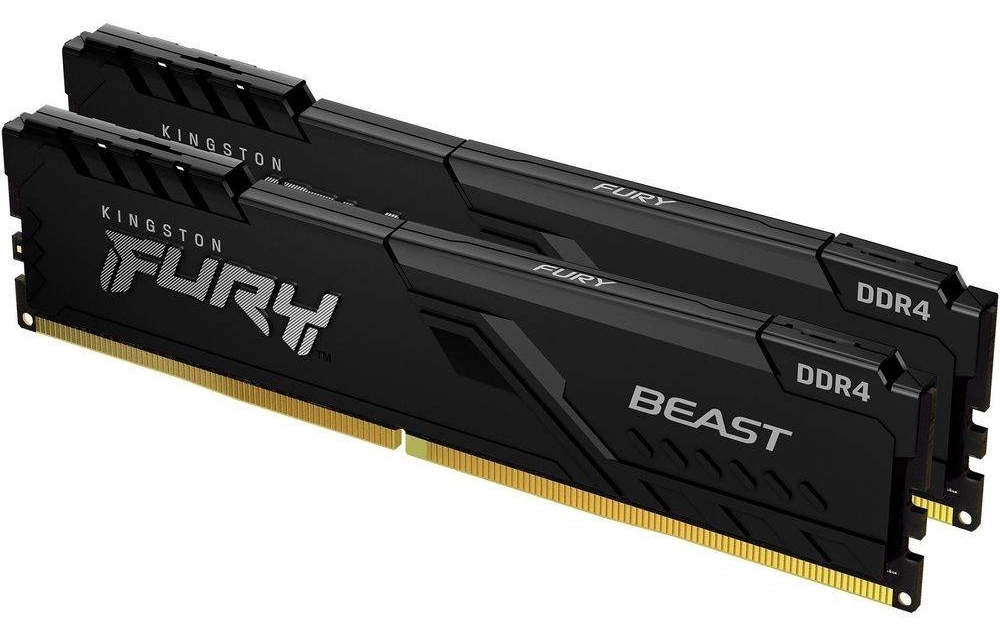

Operační paměť
Operační paměť (Random Access Memory – RAM) slouží k dočasnému ukládání dat a instrukcí, se kterými procesor právě pracuje. Na rozdíl od diskového úložiště je její obsah volatilní, takže po vypnutí počítače nebo odpojení napájení se data z paměti smažou.
RAM umožňuje procesoru rychlý přístup k programům a datům uloženým na disku. Při spuštění aplikace se potřebná data načtou z úložiště právě do operační paměti, odkud s nimi procesor dokáže pracovat výrazně rychleji.
Přístup do operační paměti je totiž mnohonásobně rychlejší než přístup na pevný disk nebo SSD. Proto může nedostatek RAM způsobovat zpomalení systému, delší načítání aplikací nebo problémy při práci s více programy současně.
Na plynulost systému má vliv nejen samotná kapacita paměti, ale také její rychlost, latence a správné zapojení modulů. Operační paměť zároveň musí být kompatibilní se zvolenou platformou a základní deskou.
Pokud se operační paměť zaplní, začne operační systém využívat stránkovací soubor na disku. To ale znamená výrazně pomalejší práci s daty a znatelné zpomalení celé sestavy.

Hlavní parametry při výběru operační paměti
-
Kapacita operační paměti
Kapacita RAM se udává v gigabajtech (GB). Pro běžný kancelářský počítač dnes většinou stačí 8–16 GB RAM. U herních sestav, virtualizace nebo náročnějších aplikací bývá vhodné zvolit větší kapacitu podle plánovaného využití počítače.
-
Generace pamětí
Moderní stolní počítače používají paměti typu DDR SDRAM. Dnes se nejčastěji setkáte s DDR4 a DDR5. Tyto typy nejsou vzájemně kompatibilní a používají jiné napětí. Z tohoto důvodu mají i odlišně umístěný polohovací zářez, takže není možné zasunout nekompatibilní modul do slotu. Paměti DDR5 přinášejí vyšší přenosové rychlosti a větší propustnost. Zároveň pracují s nižším napětím a mají integrované řízení napájení přímo na modulu, což pomáhá stabilitě při vyšších frekvencích.
-
Frekvence a propustnost
Paměti bývají označené například jako DDR5-6000. Číslo udává efektivní přenosovou rychlost v MT/s (milionech transferů za sekundu). Nejde tedy přímo o frekvenci v MHz, ale o počet datových přenosů za sekundu. Vyšší přenosová rychlost znamená vyšší teoretickou propustnost paměti, tedy větší objem dat přenesených za určitý čas. Reálný přínos ale závisí také na architektuře procesoru a konkrétní aplikaci.
-
Latence
Vedle přenosové rychlosti je důležitá také latence, která bývá označená například jako CL30 nebo CL36. Tato hodnota udává počet cyklů potřebných k zahájení přenosu dat po přijetí požadavku. Nižší latence znamená rychlejší odezvu, ale při porovnávání je potřeba zohlednit i přenosovou rychlost paměti. Vyšší frekvence totiž může částečně kompenzovat vyšší hodnotu CL.
-
Počet modulů
Moderní procesory podporují vícekanálový přístup k paměti. Nejčastěji se používá dvoukanálové zapojení (Dual Channel), kdy procesor pracuje se dvěma moduly současně. Použití dvou modulů přináší vyšší propustnost než jeden modul stejné kapacity, proto bývá výhodnější například konfigurace 2× 8 GB místo 1× 16 GB. Pokud má základní deska pouze dva sloty a oba jsou obsazené, je potřeba při budoucím rozšíření původní moduly vyměnit. U desek se čtyřmi sloty je vhodné řídit se doporučením výrobce uvedeným v manuálu, protože pro správnou funkci Dual Channel není jedno, do kterých slotů moduly zapojíte. Ačkoliv může Dual Channel fungovat i s různými moduly, výrobci většinou doporučují používat identické paměti kvůli co nejlepší kompatibilitě a stabilitě.
-
Další faktory ovlivňující kompatibilitu
Tyto parametry se týkají hlavně serverových nebo profesionálních pamětí, se kterými se můžete setkat například v bazarech nebo e-shopech za zajímavou cenu. I když takový modul fyzicky pasuje do slotu a odpovídá správné generaci, běžná základní deska jej často nepodporuje. Kompatibilitu je proto dobré vždy ověřit v manuálu základní desky. -
Rank
Rank představuje logickou skupinu paměťových čipů, kterou řadič vidí jako jednu jednotku. Počet ranků může ovlivnit maximální dosažitelnou frekvenci pamětí, hlavně při osazení více modulů. U běžných počítačů se nejčastěji setkáte s moduly typu single rank a dual rank. Quad rank moduly bývají určené spíše pro servery a klasické základní desky je nemusí podporovat . Při kombinaci většího množství dual rank modulů nebo různých typů ranků může dojít ke snížení frekvence pamětí. -
ECC
Existují také paměti s podporou ECC (Error-Correcting Code), které umí detekovat a opravovat chyby. Používají se hlavně v serverech a běžné základní desky je často nepodporují. -
Registered/Buffered (RDIMM)
U pamětí se můžete setkat také s moduly typu Registered nebo Load-Reduced (LRDIMM). Ty obsahují mezilehlé obvody mezi pamětí a řadičem, které snižují elektrickou zátěž a zvyšují stabilitu při použití většího množství modulů. Tyto typy pamětí jsou určené hlavně pro servery a profesionální pracovní stanice a běžné základní desky je zpravidla nepodporují.